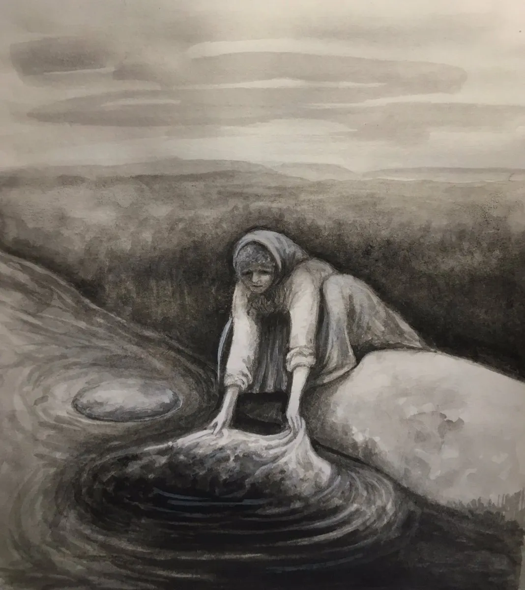
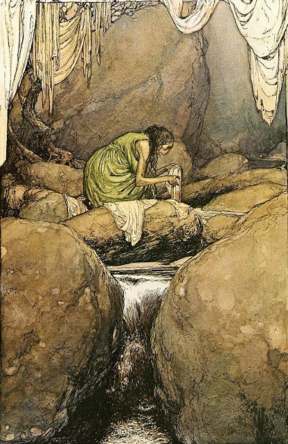

It’s a dark evening and you find yourself wandering in the gloom along the side of a little Scottish highland stream. Suddenly you see some movement down near the water and spot an old woman washing clothes in the stream. You may be tempted to wander down to the side of the stream and pass the time of day before making your way home, but this would be a big mistake, because the old woman is a dreaded bean-nighe.

The bean-nighe, Scottish Gaelic for “washerwoman” or “laundress”, is a female spirit in Scottish folklore, regarded as an omen of death and a messenger from the Otherworld, and also has a French equivelant, Les Lavandières.
